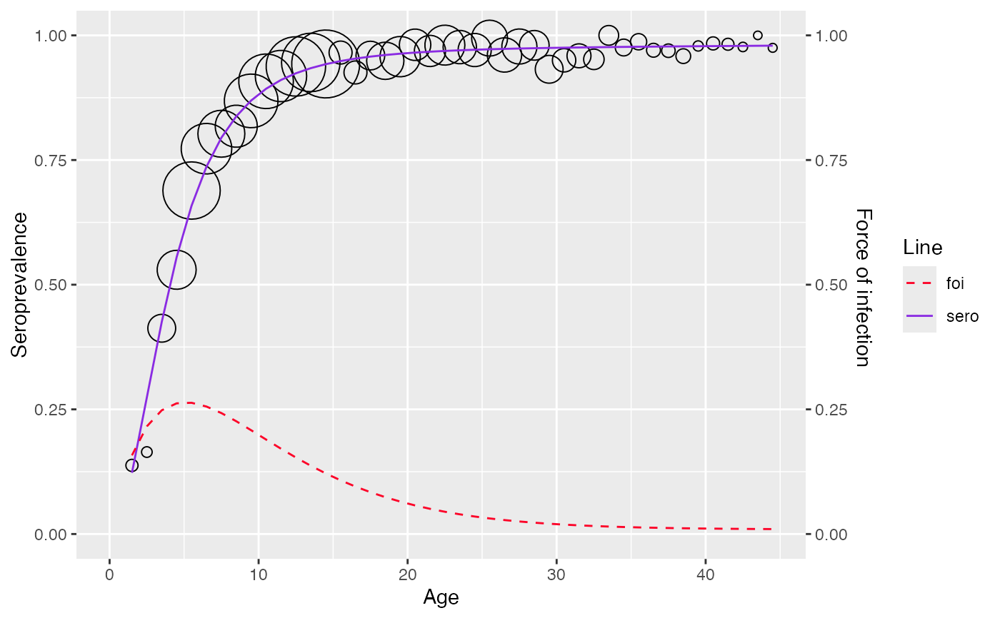

Refers to section 10.3
Value
a list of class hierarchical_bayesian_model with 6 items
- datatype
type of datatype used for model fitting (aggregated or linelisting)
- df
the dataframe used for fitting the model
- type
type of bayesian model far2, far3 or log_logistic
- info
parameters for the fitted model
- sp
seroprevalence
- foi
force of infection
- sp_func
function to compute seroprevalence given age and model parameters
- foi
function to compute force of infection given age and model parameters
Examples
# \donttest{
df <- mumps_uk_1986_1987
model <- hierarchical_bayesian_model(df, type="far3")
#>
#> SAMPLING FOR MODEL 'fra_3' NOW (CHAIN 1).
#> Chain 1: Rejecting initial value:
#> Chain 1: Log probability evaluates to log(0), i.e. negative infinity.
#> Chain 1: Stan can't start sampling from this initial value.
#> Chain 1: Rejecting initial value:
#> Chain 1: Log probability evaluates to log(0), i.e. negative infinity.
#> Chain 1: Stan can't start sampling from this initial value.
#> Chain 1: Rejecting initial value:
#> Chain 1: Log probability evaluates to log(0), i.e. negative infinity.
#> Chain 1: Stan can't start sampling from this initial value.
#> Chain 1: Rejecting initial value:
#> Chain 1: Log probability evaluates to log(0), i.e. negative infinity.
#> Chain 1: Stan can't start sampling from this initial value.
#> Chain 1: Rejecting initial value:
#> Chain 1: Log probability evaluates to log(0), i.e. negative infinity.
#> Chain 1: Stan can't start sampling from this initial value.
#> Chain 1: Rejecting initial value:
#> Chain 1: Log probability evaluates to log(0), i.e. negative infinity.
#> Chain 1: Stan can't start sampling from this initial value.
#> Chain 1:
#> Chain 1: Gradient evaluation took 0.000123 seconds
#> Chain 1: 1000 transitions using 10 leapfrog steps per transition would take 1.23 seconds.
#> Chain 1: Adjust your expectations accordingly!
#> Chain 1:
#> Chain 1:
#> Chain 1: Iteration: 1 / 5000 [ 0%] (Warmup)
#> Chain 1: Iteration: 500 / 5000 [ 10%] (Warmup)
#> Chain 1: Iteration: 1000 / 5000 [ 20%] (Warmup)
#> Chain 1: Iteration: 1500 / 5000 [ 30%] (Warmup)
#> Chain 1: Iteration: 1501 / 5000 [ 30%] (Sampling)
#> Chain 1: Iteration: 2000 / 5000 [ 40%] (Sampling)
#> Chain 1: Iteration: 2500 / 5000 [ 50%] (Sampling)
#> Chain 1: Iteration: 3000 / 5000 [ 60%] (Sampling)
#> Chain 1: Iteration: 3500 / 5000 [ 70%] (Sampling)
#> Chain 1: Iteration: 4000 / 5000 [ 80%] (Sampling)
#> Chain 1: Iteration: 4500 / 5000 [ 90%] (Sampling)
#> Chain 1: Iteration: 5000 / 5000 [100%] (Sampling)
#> Chain 1:
#> Chain 1: Elapsed Time: 14.459 seconds (Warm-up)
#> Chain 1: 3.506 seconds (Sampling)
#> Chain 1: 17.965 seconds (Total)
#> Chain 1:
#> Warning: There were 1634 divergent transitions after warmup. See
#> https://mc-stan.org/misc/warnings.html#divergent-transitions-after-warmup
#> to find out why this is a problem and how to eliminate them.
#> Warning: Examine the pairs() plot to diagnose sampling problems
#> Warning: The largest R-hat is 1.3, indicating chains have not mixed.
#> Running the chains for more iterations may help. See
#> https://mc-stan.org/misc/warnings.html#r-hat
#> Warning: Bulk Effective Samples Size (ESS) is too low, indicating posterior means and medians may be unreliable.
#> Running the chains for more iterations may help. See
#> https://mc-stan.org/misc/warnings.html#bulk-ess
#> Warning: Tail Effective Samples Size (ESS) is too low, indicating posterior variances and tail quantiles may be unreliable.
#> Running the chains for more iterations may help. See
#> https://mc-stan.org/misc/warnings.html#tail-ess
model$info
#> mean se_mean sd 2.5%
#> alpha1 1.374349e-01 2.469659e-03 7.304112e-03 1.256108e-01
#> alpha2 1.971191e-01 2.365928e-03 8.668356e-03 1.840890e-01
#> alpha3 8.361884e-03 9.115459e-04 6.405086e-03 6.530832e-04
#> tau_alpha1 3.232071e-02 8.114025e-03 7.619259e-02 1.649675e-05
#> tau_alpha2 6.679641e-01 2.734528e-01 1.028098e+00 6.526141e-06
#> tau_alpha3 5.874325e-02 1.502771e-02 1.094519e-01 6.639239e-06
#> mu_alpha1 -5.831428e+00 1.717162e+00 3.215799e+01 -7.580347e+01
#> mu_alpha2 1.899729e+00 2.488519e+00 3.501723e+01 -7.316053e+01
#> mu_alpha3 7.615985e+00 1.031699e+01 6.091801e+01 -9.637830e+01
#> sigma_alpha1 8.046101e+01 3.723283e+01 1.601118e+03 1.845717e+00
#> sigma_alpha2 5.050277e+01 1.023182e+01 2.116087e+02 5.704865e-01
#> sigma_alpha3 6.396098e+01 1.470747e+01 3.041621e+02 1.532948e+00
#> lp__ -2.535346e+03 8.603892e-01 3.512983e+00 -2.543226e+03
#> 25% 50% 75% 97.5%
#> alpha1 1.309418e-01 1.381552e-01 1.433022e-01 1.496570e-01
#> alpha2 1.903549e-01 1.978268e-01 2.027656e-01 2.136976e-01
#> alpha3 2.918675e-03 7.742625e-03 1.200969e-02 2.372548e-02
#> tau_alpha1 8.305591e-04 3.669129e-03 1.367782e-02 2.935416e-01
#> tau_alpha2 1.304788e-03 6.628968e-02 1.133317e+00 3.072622e+00
#> tau_alpha3 5.987982e-04 7.336155e-03 5.747848e-02 4.255445e-01
#> mu_alpha1 -1.143099e+01 -2.676034e+00 2.767768e+00 4.919579e+01
#> mu_alpha2 -1.520815e+00 4.404344e-01 2.365690e+00 8.958812e+01
#> mu_alpha3 -3.895228e+00 -3.255963e-03 4.586351e+00 2.369248e+02
#> sigma_alpha1 8.550509e+00 1.650901e+01 3.469882e+01 2.462098e+02
#> sigma_alpha2 9.393433e-01 3.883981e+00 2.768415e+01 3.914472e+02
#> sigma_alpha3 4.171069e+00 1.167549e+01 4.086578e+01 3.880977e+02
#> lp__ -2.537755e+03 -2.535076e+03 -2.532816e+03 -2.529997e+03
#> n_eff Rhat
#> alpha1 8.747031 1.1212692
#> alpha2 13.423642 1.0897105
#> alpha3 49.373384 1.0283578
#> tau_alpha1 88.176492 1.0039526
#> tau_alpha2 14.135280 1.3042242
#> tau_alpha3 53.047004 0.9997529
#> mu_alpha1 350.715887 1.0015192
#> mu_alpha2 198.007524 1.0074621
#> mu_alpha3 34.864649 1.0304100
#> sigma_alpha1 1849.244902 0.9999612
#> sigma_alpha2 427.721511 1.0054612
#> sigma_alpha3 427.695365 1.0184599
#> lp__ 16.671016 1.1939938
plot(model)

# }